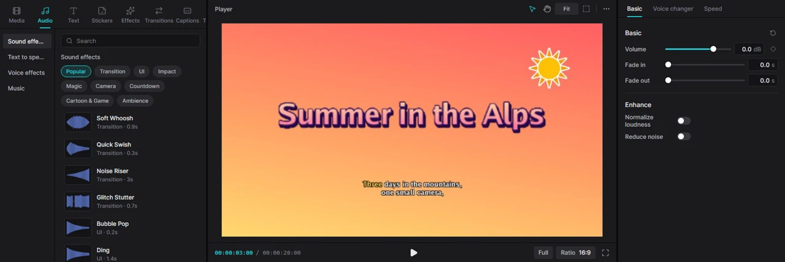
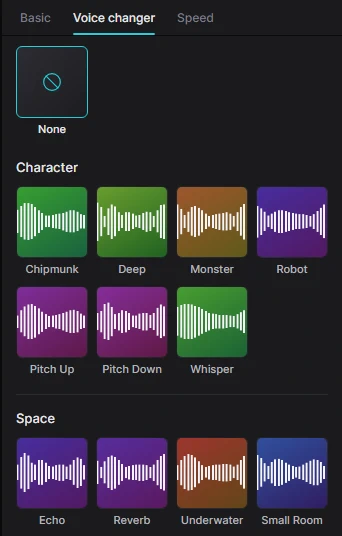
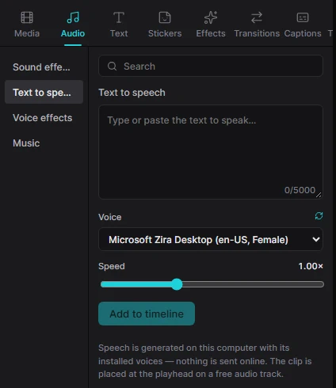

Для людейТворчість5 хв читання
Аудіо
Добрий звук робить відео. У Kadr можна додати музику й звукові ефекти, вирівняти гучність, почистити голос і навіть створити закадровий голос із тексту.

Музика та інше аудіо
Вбудованої музичної бібліотеки в Kadr немає — використовуйте власні треки. Імпортуйте MP3, WAV, M4A, FLAC чи інші аудіофайли на вкладці Media, потім натисніть + на картці або перетягніть її на таймлайн. Аудіо лягає на власну доріжку під відео, і його можна переміщувати, обрізати й розрізати, як будь-який кліп.
Використовуйте лише музику, на яку маєте права. YouTube та інші платформи можуть вимкнути звук або заблокувати відео з піснями, захищеними авторським правом.
Гучність і згасання
Виділіть аудіокліп — або відеокліп і його вкладку Audio — щоб побачити Basic:
- Volume — гучність у децибелах (дБ): 0 дБ — початковий рівень, −6 дБ — приблизно вдвічі тихіше, аж до −∞ (тиша); до +20 дБ — щоб підсилити тихий запис. Ромб поруч дає змогу анімувати гучність, наприклад приглушити музику, коли хтось говорить.
- Fade in / Fade out — плавне наростання на початку та згасання в кінці, у секундах.
- Normalize loudness — вирівнює гучність кліпу до рівня, зручного для соцмереж і YouTube.
- Reduce noise — прибирає рівномірний фоновий шум: шипіння, гудіння, вітер.
Кнопка з круговою стрілкою скидає ці налаштування. Щоб вимкнути звук цілої доріжки, натисніть динамік на її початку.
Зміна голосу
Змініть звучання голосу одним із 25 ефектів — Chipmunk («бурундук»), Deep (низький), Monster, Robot, Whisper (шепіт), Echo, Reverb, Underwater (під водою), Megaphone, Lo-fi та інші.
- Виділіть кліп і відкрийте Voice changer в інспекторі (для відеокліпу — всередині вкладки Audio). Клацніть ефект; None вимикає його.
- Або відкрийте в бібліотеці Audio → Voice effects, виділіть кліп на таймлайні й натисніть + на ефекті.

Відокремити звук від відео
Відеокліп несе власний звук. Щоб працювати зі звуком окремо — інакше обрізати, перемістити чи замінити, — виділіть відео й натисніть Ctrl+Shift+S або оберіть Smart tools → Separate audio. Звук стане окремим аудіокліпом, пов’язаним із відео, тож вони рухатимуться разом, поки ввімкнено Linkage.
У контекстному меню відеокліпу є також Extract audio: звук переїжджає в новий аудіокліп, а власний звук відео вимикається.
Звукові ефекти
Відкрийте вкладку Audio бібліотеки — першим показано Sound effects. Тут 47 оригінальних звуків — свисти, «попи», удари, клацання інтерфейсу, нарощування, магія, камера, відліки, мультяшні звуки й атмосфера, — розкладених кнопками-категоріями вгорі. Усі синтезовані самим Kadr і вільні для використання будь-де.
- Прослухати: клацніть звук або затримайте на ньому мишу на мить.
- Додати: + ставить звук у позицію курсора відтворення, або перетягніть його в потрібне місце таймлайна — «вжух» точно на переході творить дива.
Озвучення тексту (закадровий голос)

- Відкрийте в бібліотеці Audio → Text to speech.
- Введіть або вставте текст (до 5000 символів).
- Оберіть голос у Voice і швидкість у Speed (від 0.5× до 2×).
- Натисніть Add to timeline. Озвучення ляже у позицію курсора відтворення на вільну аудіодоріжку.
Уже маєте текстовий кліп? Виділіть його — панель запропонує Read this clip aloud (зачитати цей кліп), а з позначкою Fit the text clip to the speech length текст буде на екрані рівно стільки, скільки його вимовляють. Те саме є в інспекторі: Text → Speech.
Гучність озвучення вирівнюється, тож воно гармонійно звучить поруч з іншим аудіо. Потім його можна автоматично субтитрувати.
Які голоси доступні
- Голоси Windows — вбудовані у Windows і працюють повністю офлайн. Щоб додати мови, відкрийте у Windows Параметри → Час і мова → Мовлення (Settings → Time & language → Speech), додайте голоси й натисніть у Kadr стрілку оновлення поруч із Voice.
- eSpeak NG — безкоштовний синтезатор мовлення для приблизно 130 мов, зокрема української. Якщо його встановити, голоси з’являться автоматично.
- ElevenLabs — дуже природні хмарні голоси багатьма мовами, якщо у вас є обліковий запис ElevenLabs. Див. нижче.
Голоси ElevenLabs
ElevenLabs — онлайн-сервіс, тому потрібен API-ключ із вашого облікового запису ElevenLabs (у профілі, розділ API keys; ключ починається з sk_). Kadr зберігає ключ лише на вашому комп’ютері.
- Відкрийте Settings → Voices (на головному екрані — Settings, у редакторі — Menu → Settings…).
- Вставте ключ у поле ElevenLabs API key і натисніть Save. Kadr одразу скаже, чи працює ключ і скільки голосів він відкрив.
Інші способи, без відкриття налаштувань:
Спосіб А — файл із ключем (без команд). Відкрийте в Kadr Settings → About і скопіюйте шлях Data folder. У цій папці створіть текстовий файл із назвою рівно elevenlabs.key (стежте, щоб Windows не дописав .txt), вставте в нього ключ єдиним рядком і збережіть.
Спосіб Б — одна команда. Якщо під час встановлення ви залишили опцію Додати kadrctl і kadr-mcp до PATH, відкрийте PowerShell і виконайте (зі своїм ключем):
kadrctl run tts.set_api_key --provider elevenlabs --api_key sk_your_key_hereУ відповіді буде сказано, чи працює ключ і скільки голосів він відкрив.
Потім в Audio → Text to speech натисніть стрілку оновлення поруч із Voice. Голоси ElevenLabs з’являться окремою групою у списку, а також у Text → Speech.
З голосом ElevenLabs текст, який ви озвучуєте, надсилається до ElevenLabs і витрачає кредити вашого облікового запису. Голоси Windows та eSpeak ніколи не залишають ваш комп’ютер. Щоб прибрати ключ, натисніть Remove у Settings → Voices (або видаліть файл elevenlabs.key).
Інші інструменти звуку
- Швидкість — аудіокліпи мають вкладку Speed з опцією Keep pitch; див. Швидкість.
- Вирізання тиші — прибирає тихі місця з мовлення; див. ШІ-інструменти.
- Визначення бітів і вимірювач гучності існують як команди (
audio.detect_beatsставить маркер на кожен біт пісні,audio.loudnessвимірює LUFS), але кнопок для них ще немає — попросіть ШІ-асистента їх виконати, а потім ріжте по маркерах самі.